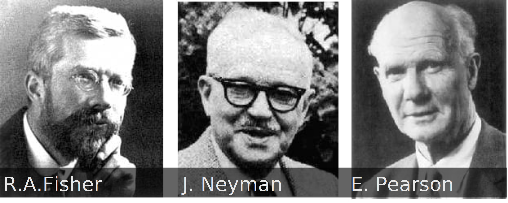
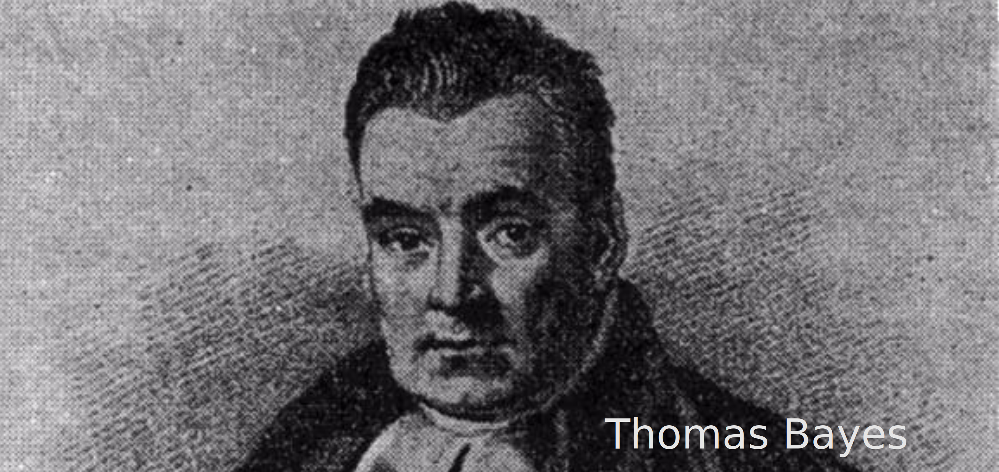
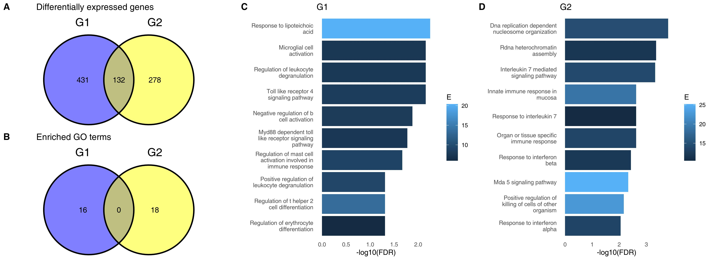

2 Statistics
2.1 We are all Bayesians
When talking about statistics to students, I like to show a simple coin trick. It isn’t really a trick at all, but for me realizing what it shows for the first time completely changed the way how I understand the whole field.
Imagine that I put a coin on a table, heads up. The first question I ask you is: what is the probability that the coin is heads up? What is the probability that the coin is tails up? You can clearly see that the coin is heads up, so you tell me that the first probability - heads up - is 100%, and the probability that it is tails up is 0%.
I take the coin in my hand and as I am about to throw it in the air I ask you what is the probability that it lands heads up. Usually you will say 50%. That is an obvious answer. But now, I actually throw the coin, catch it and land it on my hand - but I still cover it with my hand, so none of us can see how the coin landed. I ask you again: what is the probability that the coin shows heads? Now you might start to get suspicious, but the answer is still pretty much obvious: 50%, 1:1.
OK, but now the plot thickens. I raise my hand just a bit and take a peek on the coin. You still can’t see it, but I exclaim: “AHA!” - I know already how it landed. I ask my question again: what is the probability that it landed heads up? Maybe you tell me: it is still 50%. But wait, I have already seen whether it is heads up, right? For me the situation is the same as at the very beginning, when the coin was still on the table. So for me, it is either 0% - if it landed tails up - or 100%, if it showing heads?
But how can probability be relative? Can it be relative at all?
The answer is, maybe surprisingly: it can’t. At least not in the “regular”, frequentist statistics - the one that we use in most of our scientific papers. In fact, the very moment that the coin landed, the probability was 0 or 100%, whether we were aware of it or not.
That is why, in classical statistics, the p-values are not really to tell us any probability about our particular statistical test! If we were to compare two groups with a t-test, then either there are differences between the groups or there aren’t any - the coin has already landed, the probability is either 0% or 100%. What the p-values are meant to do is to keep is from making a mistake (specifically, a type I error) in the long run. However, whether we made a mistake or not is, in a particular case, 0% or 100%, we just don’t know which one. However, we can be reasonably confident that the percentage of such mistakes in our research will be less than 5% (or whichever p-value threshold we choose).
Our intuition was therefore wrong… but was it, really?
It turns out – it was wrong, but only in the classic, frequentist statistics. However it was dead on right from the point of view of Bayesian statistics. In Bayesian statistics, probability is a measure of information. We start with a rough idea based on some prior knowledge - that the coins are generally fair and land 50% of the time showing heads. We do an experiment, and we update this knowledge by observing that it landed actually showing heads, and we increase the probability to 100%. Until we make the observation, we keep the prior - whether the coin has already landed or not, as long we don’t know how it landed, the probability is still 50%. Thus, our intuition is definitely bayesian.
This makes for an interesting conundrum: we normally use frequentist statistics, but we think in bayesian terms. This has profound and unfortunate consequences, because p-values are a part of the language of science. We use p-values and statistical hypothesis testing on a regular basis to communicate with other researchers, to tell them something about our results, but this language is unintuitive and poorly understood by many.
One of the reasons that the “frequentist” hypothesis testing is so firmly established is that bayesian statistics requires way more computing resources, which only relatively recently became widely available to statisticians.
Is the Bayesian statistics “more correct” than the frequentist approach? There is no easy answer to this question. The debates between frequentist statisticians and bayesians can actually get quite heated at times. However, whatever our views on frequentists statistics are, the majority of the scientific papers will still involve p-values of some sort of another, and that means that you need to understand what p-values are.
| Frequentist Statistics | Bayesian Statistics |
|---|---|
|  |  |
| 1. Probability is defined as the long-run frequency of events | 1. Probability represents a degree of belief or certainty about an event |
| 2. Parameters (like the “true value”) are fixed but unknown quantities. | 2. Parameters are treated as random variables with their own probability distributions. |
| 3. Asking about the probability of a hypothesis does not make sense | 3. Asking about the probability of a hypothesis is the main goal |
Therefore, let us talk about what p-values are, what their drawbacks are and what we can do about it.
2.2 How to understand p-values
2.2.1 What is a p-value?
Say you want to run a statistical test - such as a t test - to decide whether two groups differ. You want to distinguish between two possibilities:
- There are no differences between the groups
- There are differences between the groups
We call the former situation \(H_0\) or the null hypothesis, and the latter (there are differences), the \(H_1\) or the alternative hypothesis.
Say you run the test, and you got a p-value of 0.02. What does that mean? P-value is a probability (this is where the p in “p-value” comes from), but it is the probability of what, exactly?
Take a moment and try to answer this question. Chances are, your answer is one of these:
- Probability that \(H_0\) is true (probability that there is no difference), given the data
- Probability that \(H_1\) is true (probability that there is a difference), given the data
- Probability that the data is random
- Probability that the observations are due to random chance
- Probability of getting the same data by random chance
If your answer is above, I have good and bad news. The bad news is that you are wrong, because the correct answer is not among the answers above. The good news is that you are in a good company, research shows that something like half of the scientists using p-values don’t really understand them. Oh wait, that means that a lot of scientists don’t understand p-values, that can’t be good - I guess I have only bad news for you, then.
For the purposes of this discussion, we can simplify a formal definition to the following:
In other words, assuming that there are no differences, but keeping all our other assumptions about the data (for example, how it is distributed), we ask what is the probability of getting data that show the same or larger differences between the groups?
Let us dive in it a bit deeper.
When you run a t-test, you calculate the so-called t statistic. It is the measure of the difference between the groups that we observe. It takes into account the differences and how many data points we have. What we do in the t-test we are assuming that there are no differences between the group, and ask, how likely it is to get a t value equal or larger to the one that we got under this assumption.
2.2.2 Statistical tests make assumptions
As you can see, this definition of p-value I have included here is closest to the last of the wrong answers I have written out before – “probability of getting the same data by random chance”. However, there is a subtle but extremely important difference between the formulations, and I don’t mean that one uses “same data” and the other uses “an effect at least as extreme”. What I am talking about is that we are not looking at random data. The effects that we calculate under \(H_0\) must fullfill a lot of assumptions of the statistical test.
You probably heard of one of this assumptions - the assumption of normality. Parametric tests such as the t-test assume that the data is (roughly) normally distributed. If your data is not normally distributed – and a lot of biological data is not normally distributed – then this assumption is violated, and the p-value is calculated based on a model that does not fit our data.
However, we could successfully argue that, in fact, no real data is normally distributed. Consider such a trait as the height of a human being. This is one of the traits that are par excellence the examples of normally distributed data. However, an actually normal variable can take any value with a certain, non-zero probability. In other words, there should be a non-zero probability of having a human being with height, say, 10 kilometers, or maybe have a negative length of -20 cm. Which, of course, doesn’t make any sense.
Normality testing. You can test the data for normality. However, you need to be cautious. First, without enough samples, you will never be able to reject the assumption of normality. And if you have a lot of samples, you will almost always reject the assumption of normality. In other words, whether you reject the assumption of normality or not depends to some extent on your number of samples. Some statisticians, myself included, think that testing for normality of the data is therefore a waste of time.
However, we know that many parametric tests – such as t-test and ANOVA – ara actually fairly robust when it comes to the violation of normality. In other words, you can safely use them with data which is not really normally distributed. This is one of these things that make statisticians remember the famous quote of George E. P. Box: “All models are wrong, but some are useful”.
However, there are also other assumptions, of which one of the most important ones is the assumption of independence.
2.2.3 Assumption of independence
This actually happened: I have been comparing the transcriptomes of two groups of people, healthy controls and patients suffering from a disease. What I saw was a large number of genes related to sex chromosomes. When I got the full meta-data of the project, it turned out that while the patients were 90% male, almost all of the healthy controls were health care workers, primarily nurses – in other words, females.
Such a setup violates the assumption of independence: that each measurement is independent of other measurements. This makes any results of statistical hypothesis testing in this setup unreliable, whatever test you are using, whether it is parametric or not etc.
One way of dealing with that is to use the sex of the individual as another coefficient in the model. This has the drawback of making the model more complex and decreasing your statistical power, but is otherwise a good way to proceed. Unless, of course, all the males are in one group, and all the females are in the other – in such a case there is no good way to study the data. You just wasted a lot of time and money.
Another way that the assumption of independence is typically violated is a batch effect. Some technologies are more prone to batch effects than others, and you should always attempt to preemptively plan your experiments in a way that minimizes potential batch effects. One such technique is randomization – you randomly assign your samples to batches, so batches and groups do not correlate.
While batch effects can be removed to a certain degree – and there are specialized tools for that – this never works to a 100%, and even when it works, it will not help you with a botched experiment design, in which groups and batches coincide.
2.3 Problems with p-values
P-values have all sorts of problems. Some of them are inherent and the result of p-value properties. Others are due to how we handle them.
The ASA statement on p-values: context, process, and purpose (Wasserstein and Lazar 2016)
2.3.1 P-values have limited informative value
What would you say if I told you that p-values are not informative about your specific experiment that you are considering? As we discussed, p-values are calculated assuming that there is no effect – for example, no difference between the groups. However, when we find that \(p < 0.05\), we reject the \(H_0\). The p-value is then calculated based on an assumption that was rejected, that we decided is not real. In our world (in which there is a difference between the groups), the p-value does not describe any reality. It belongs to an alternate world, in which there was no difference between the groups.
However, what p-values definitely do in a reasonable way is to control the false discovery rate. While it can be argued (as above) that p-values are not informative for the particular experiment we are considering, using p-values protects you from too many false positives in the long run. It works as follows: even assuming no effect (no differences between the groups), there is a certain probability of observing large differences once in a while. By carefully considering this possibility with p-values we are attempting to make sure that this rare events do not fool us more than once in 20 times (which corresponds to the p-value threshold of 0.05).
However, p-values are not XXX
2.3.2 Absence of evidence is not evidence of absence
The very name “type I error” suggests that there is another, second type of error. Indeed there is: the type II error. While the type I error is getting a false positive – concluding a difference where there isn’t one – the other side of the coin is doing the opposite – concluding a lack of difference when there is, in fact, a difference. This is called a false negative.
The bad news is, p-values do absolutely nothing to help with controling the false negative rate. The even worse news is that these errors are really, really common. You have probably heard of “statistical power”: that is exactly the ability of a statistical test to avoid false negative errors. It turns out that even for most powerful tests in best possible settings this power rarely exceeds 80%: in other words, 20% of true differences are never discovered!
This has several practical consequences. One of the most important is that the fact that the difference between the groups was not statistically significant does not mean that there is no difference.
2.3.3 Difference between statistically significant and non-significant is not significant
Andrew Gelman coined the phrase “the difference between statistically significant and non-significant is not, itself, statistically significant”. What it means is this: if in one comparison you get a statistically significant difference, and in the other one you see that there is no significant difference, then you cannot conclude that the there is a difference between comparisons.
Oh my, I think I have utterly confused you now. I think, however, that the problem is important and worth looking into, because while it is a surprisingly common way of reasoning, it is utterly wrong and can lead you astray.
Consider this. You have two strains of mice, a wild type (WT) and a knockout. Your hypothesis is that while in the WT the regulation of a cytokine production works correctly and the cytokine gets produced upon stimulation, the regulation is broken in the KO. You plan your experiment as follows: for each of the mouse strains, you have a control (Ctrl) and a treatment (Trt) group, and your response variable is the level of the cytokine you have measured.
Now to evaluate your experiment, you compare Ctrl with Trt in the WT strain and also in the KO strain. You have two comparisons: in WT (\(\Delta\)WT = TrtWT - CtrlWT) and in KO (\(\Delta\)KO = TrtKO - CtrlKO). In both cases, you run a t-test. You find that the p-value from the first comparison (\(\Delta\)WT) is significant (\(p < 0.05\)), and the p-value from the second comparison (\(\Delta\)KO) is not (\(p > 0.05\)). Does that mean that you confirmed your hypothesis? Can you say that there is no difference in KO, but there is a difference in WT?
The short answer is: no, you can’t.
You were able to show that there is a significant difference in the WT strain, but you failed to show that there is a difference in the KO. And failing to show a difference is not the same as showing a lack of difference. This is erronous reasoning is widely spread – a while ago a team of researchers looked at bunch of publications and found that almost half of the scientists that could make this error, did it.
Erroneous analyses of interactions in neuroscience: a problem of significance (Nieuwenhuis, Forstmann, and Wagenmakers 2011).
So what should we do instead? In fact we have to run a single statistical test. We have the differences in KO (\(\Delta\)KO), and the differences in the WT (\(\Delta\)WT), and we need to test whether these differences differ, whether \(\Delta_{KO} \neq \Delta_{WT}\). This difference of differences is called, in statistics, interaction. To put it in a slightly more formal way, you have a 2-factor experiment (with one factor being the mouse strain, KO or WT, and the other being the treatment or lack thereof) and what you need to test is the interaction between the two factors.
The bad news (I seem to be the bringer of bad news all throughout this chapter) is that this test for interaction is much weaker (in terms of statistical power) than a simple comparison between two groups. That means that in order to have the same chance to detect a real effect as in the case of a simple comparison, you have to use many more samples.
But wait, there’s more. More bad news to come.
2.3.4 Spurious results can be very convincing
One of the most common applications of high throughput sequencing is RNA-Seq, in which we look at transcriptomes (so, expression of thousands of genes at once) in some samples. Quite frequently, one needs to use a two factor design, for example comparing control and treatment groups in either KO or WT strains. The correct way of analysing such an experiment is, as mentioned, testing for a significant interaction. However, quite frequently the analysis is done differently.
Venn diagrams may indicate erroneous statistical reasoning in transcriptomics (Weiner 3rd, Obermayer, and Beule 2022).
I have followed that different approach in a paper I wrote a few years ago. I used gene expression data from both COVID-19 patients and non-COVID-19 patients. In each of these two groups (C19 and non-C19) there were two groups of patients, which I will call for now G1 and G2 (I will tell you what they are in a few moments). The question was: is the difference between COVID-19 patients and non-COVID-19 patients influenced by whether the patients belong to G1 or G2? In other words, does it matter for COVID-19 if you are a G1 or a G2 patient? For example, is COVID-19 more severe in G1? Are immune responses different for G1 patients than for G2 patients?

What you see on the top left on the figure above is a Venn diagram. It shows the number of genes which are significantly different between COVID-19 and non-COVID-19 patients in G1 and in G2, respectively. We can see that 431 genes are specifically different in G1 only, and 278 are specifically different in G2 only, while only 132 are common for the two groups. When you run gene set enrichment on these G1- or G2-specific genes, you will find different facets of the immune responses, like TLR-4 signalling in G1 and IL-7 mediated signalling in G2. It would be really easy to write a paper on how the groups G1 and G2 shape the immune responses to COVID-19. So not only we see that G1 and G2 differ, but we also see that these differences make biological sense.
The problem is that G1 and G2 are random samples from the same population. I have pulled these samples from one large group by random! There are absolutely no real differences between G1 and G2. And yet it was easy for me to find apperent differences, show them on a nice plot and even attribute certain specific biological processes to them. How did I do it?
Start with the “specific” genes. What does it mean that a gene is in the group of 431 genes “specific” for G1? It means that it was significant in the comparison between COVID-19 and non-COVID-19 in G1, but was not significant in G2. But as I mentioned before, the fact that it was significant does not mean that it was not different in G2 or that it is specific for G1. Perhaps the p-value was 0.049 for G1 and 0.051 in G2, and the actual differences in G1 and G2 were similar.
But if all that we are seeing on the Venn diagram is white noise, how come we have these beautiful and meaningful gene set enrichment terms? The point is that not only genes not significant in G2 may, in fact, also differ between COVID-19 and non-COVID-19 patients, albeit we fail to detact this fact; they are also very likely to be also genes which are involved in the immune responses. If a gene is related to the IL-7 mediated signalling and is significantly different in G2, it will increase the chance of detecting this pathway in G2. However, the very same gene is likely to also be regulated in G1, but our failure to detect it - because of lack of statistical power or because of random noise – means that we can’t identify the IL-7 pathway in G1. That does not, however, mean that it is not there.
The correct analysis in this case is, as mentioned before, analysis of interactions. If done correctly, the analysis does not show any differences between G1 and G2.
2.3.5 Statistically significant is not the same as significant
2.3.6 We treat p-values with too much reverence
chasing of 0.05, p-value hacking and cherry picking
3 What to do with p-values
In the previous sections I have shown many problems with p-values and their interpretation. So what should we do about them? Should we abandon them completely?
This is neither possible nor advisable. Of course, you will find a multitude of views and opinions, also among statisticians. There are journals out there which forbid to publish p-values. However, while most statisticians don’t go so far, they more or less agree that p-values are at best useful, but severely limited tools.
The ASA statement on p-values: context, process, and purpose (Wasserstein and Lazar 2016)
The idea is then not so much to remove p-values from science, but to put less stress on the p-values alone and rely more on additional information, such as effect sizes and confidence intervals. In fact, no statistical test should be reported as a p-value alone, but should always be accompanied by an estimation of an effect size. These effect sizes depend on the nature of the test and the data.